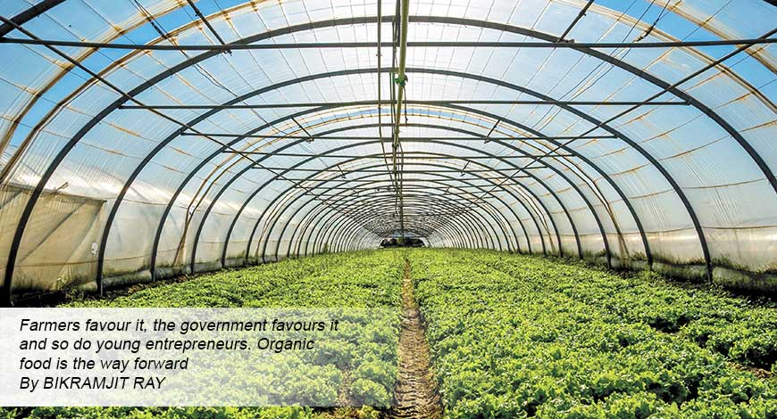

Organic Food Phenomenon: A Revolution In Indian Food Industry

Organic foods provide various benefits to our health as well as our environment.
As the organic food industry grows it will lead us to a healthy way of life building
a better future.
Over the past few years the number of health conscious people has gone up evidently.The focus from
comfort food has shifted to healthy food. People have started noticing the harmful effects of aldutrated
food and hence, their preference towards healthy or naturally grown food has increased.
Due to this changing mindset, people have started to believe of the idea“going back to your roots” .
This term is especially devised for Organic food. The Organic food shift is limited to metro cities like
New Delhi, Mumbai, and Bangalore. Although, people in rural areas cultivate these crops, they are certainly not aware of the harmful effects of conventionally grown food.
As the number of medical cases are increasing every year, people have realised the importance of maintaining good health. The good news for the health conscious populace is that most lifestyle diseases are avoiable.The fear of getting sick is compelling people to start taking precautions and avoid unhealthy food. contributing towards creating awareness around the implications of having unhealthy food, many celebrities are spreading word about having a healthy lifestyle and guiding people to change their preference to organic diets. Social media plays a major role in awaring the general public about the importance of Organic Foods in Millenials.
A lot of people have started reporting about increase in the level of pollutants in water and soil over the past few years. Most of the parents are in the fear of feeding food to their infants and children as fruits, vegetables, dairy products produced through conventional farming are not safe. Some of them are still not aware of naturally grown foods.